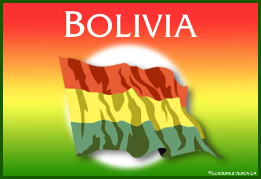
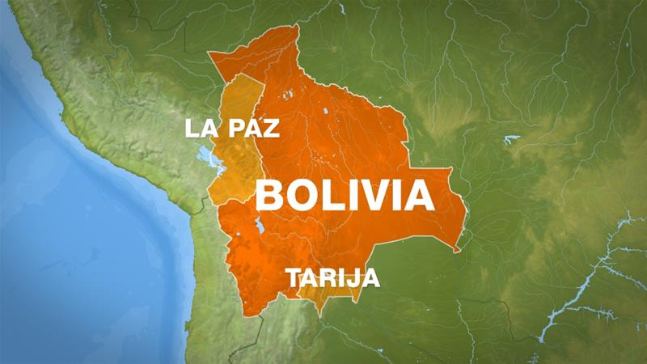
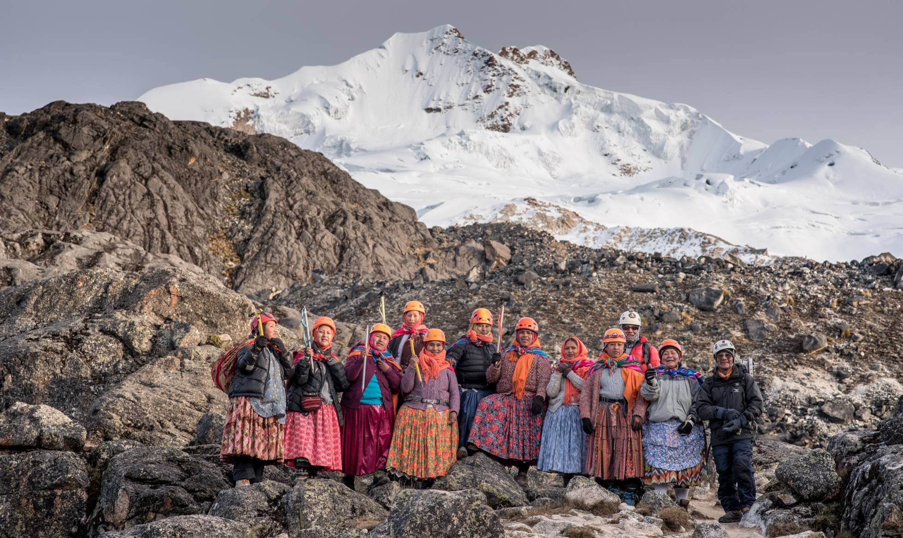

Bolivia
Es un país soberano situado en la región centro-occidental de América del Sur, políticamente se constituye como un estado plurinacional, descentralizado con autonomías. Está organizado en nueve departamentos. Su capital constitucional es Sucre, sede del órgano judicial; la ciudad de La Paz es la sede de los órganos ejecutivo, legislativo y electoral, además es el epicentro político, cultural y financiero del país.

En su territorio se desarrollaron civilizaciones antiguas como Tiwanaku, la Cultura Hidráulica de las Lomas, la cultura moxeña, la Nación aymara que sobrevive hasta la actualidad. Primero los incas y posteriormente los conquistadores españoles dominaron el territorio hasta que el país se independizó en 1825. Es por eso que Bolivia en su actual constitución política del estado se declaró como un país plurinacional al reconocer que en su territorio pre-existen varias naciones cuyos orígenes incluso son anteriores a la llegada de la colonización española.
